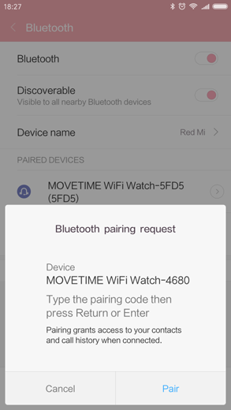

Ofte stilte spørsmål (FAQ) for Wi-Fi-klokke
Hva gjør jeg hvis KLOKKEN min ikke kan foreta og motta anrop?
- Sørg for at tilkoblingen mellom KLOKKEN og enheten din er som den skal være.
- Pass på at KLOKKEN ikke er for langt unna enheten din.
- Sjekk at du har gitt tilkoblingen tillatelse til anrop. Du vil se et Bluetooth-symbol
 på enheten etter bekreftelse. Deretter kan du foreta og motta anrop.
på enheten etter bekreftelse. Deretter kan du foreta og motta anrop.

Hvordan oppnår jeg et mest mulig nøyaktig resultat for hjertefrekvensen?
Det mest nøyaktige resultatet får du når du fester KLOKKEN godt rundt håndleddet. Selv under perfekte forhold er det ikke sikkert at KLOKKEN klarer å foreta en pålitelig avlesning av hjertefrekvensen for alle.
For en liten prosentandel av brukerne kan det være umulig å foreta en avlesning av hjertefrekvensen, grunnet ulike faktorer. Et par ting kan være behjelpelige til å oppnå en så konsistent og god avlesning av hjertefrekvens
som mulig:
- Baksiden av KLOKKEN må være i kontakt med huden.
- KLOKKEN må være festet tett rundt håndleddet, men med litt plass for huden til å puste og for sensorene til å gjøre jobben sin.
- Du kan stramme KLOKKEN under trening, og løsne den når du er ferdig.
- Sensorene virker bare hvis du bærer KLOKKEN på fremsiden av håndleddet.
Hvis KLOKKEN ikke holder seg på plass, eller hjertefrekvensen ikke kan måles, må du stramme båndet litt. KLOKKEN skal kjennes stram, men komfortabel.

Hva gjør jeg hvis KLOKKEN ikke responderer?
Trykk og hold inne av/på-tasten i 8 sekunder for å starte KLOKKEN på nytt. Dette må bare gjøres i nødstilfeller.
Hvorfor vibrerer KLOKKEN uventet noen ganger?
- Sjekk om du har mottatt et varsel.
- Pass på at KLOKKEN ikke er for langt unna enheten din.
Hva gjør jeg hvis vibrasjonen ikke virker?
- Lad batteriet, og sjekk at batteriet er oppladet.
- Sørg for at tilkoblingen mellom KLOKKEN og enheten ikke er avbrutt
Hva gjør jeg hvis KLOKKEN ikke lader?
- Kontroller at pinnene i ladestasjonen er på linje med pinnene i baksiden på klokken.
- Kontroller at USB-kabelen er festet ordentlig i USB-porten.
- Hvis KLOKKENs batteri er helt utladet, trenger den noen ganger litt tid til å aktivere batteriet og systemet.
Hvorfor øker batteriforbruket etter installering av MOVETIME-programmet og etter at KLOKKEN er tilkoblet enheten?
Dette er vanlig, og forbruket inkluderer:
- Opprettholde tilkoblingen mellom KLOKKEN og enheten.
- Filoverføring mellom KLOKKEN og enheten.
- Frakobling, skanning etter enhet, og ny tilkobling.
Hvor mange BT 4.0 lavenergi (BLE)-enheter kan kobles til enheten samtidig?
Bare 1 BLE-enhet kan kobles til enheten samtidig.
Hva gjør jeg når KLOKKEN ofte kobler seg fra enheten min?
- Kontroller at MOVETIME-programmet ikke er stanset av et systemverktøy. Hvis det er stanset, må du starte programmet på nytt.
- Kontroller at kommunikasjonen mellom KLOKKEN og enheten er som den skal være.
a) Sjekk MOVETIME-programmet på telefonen din. Hvis KLOKKEN kobler seg til enheten, vil du se et
 symbol i øverste høyre hjørne. Hvis KLOKKEN mislykkes med tilkoblingen, vil
symbol i øverste høyre hjørne. Hvis KLOKKEN mislykkes med tilkoblingen, vil
 endres til
endres til
 i midten av symbolet.
i midten av symbolet.

b) Hvis du ser Bluetooth-symbolet
 på KLOKKEN, betyr det at KLOKKEN mislyktes med å koble seg til enheten din
på KLOKKEN, betyr det at KLOKKEN mislyktes med å koble seg til enheten din
Hvordan kan jeg tilbakestille KLOKKEN til fabrikkinnstilling?
- Hvis ingen av svarene ovenfor kunne løse problemet ditt, forsøk å tilbakestille KLOKKEN.
- Trykk
 i MOVETIME-programmet, og deretter Klokke->Innstillinger->Tilbakestilling til fabrikkinnstilling, og tilbakestill KLOKKEN.
i MOVETIME-programmet, og deretter Klokke->Innstillinger->Tilbakestilling til fabrikkinnstilling, og tilbakestill KLOKKEN.
- Trykk og hold inne av/på-tasten i 10 sekunder for å tilbakestille KLOKKEN.